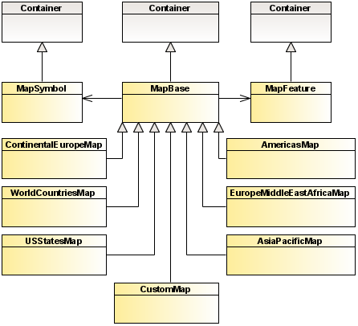

A map control is a subclass of the
MapBase class. It displays a set of map items called map
features, which are instances of the
MapFeature class.
Symbols on maps are instances of the
MapSymbol class.
A map control can be a predefined component supplied
with the product or a custom map generated with the Custom Map Converter.
